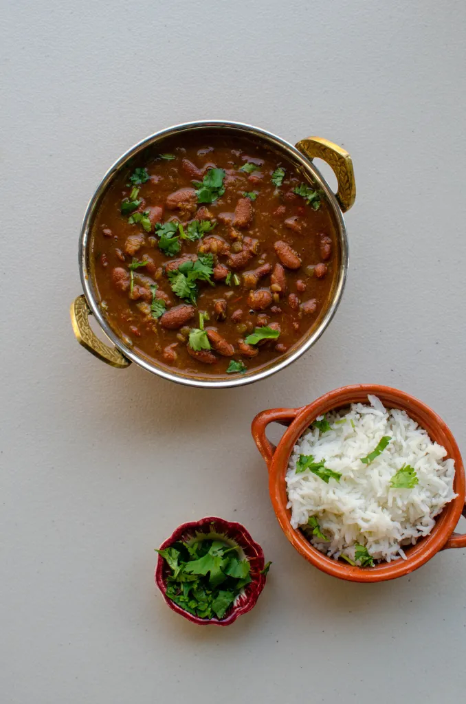

Rajma Chawal
⏱ Prep: 8 hrs soak
🔥 Cook: 40 mins
🍽 Serves: 4
Ingredients
- 2 cups rajma (kidney beans)
- 2 onions & 2 tomatoes
- Ginger-garlic paste
- Garam masala, salt
Steps
- Soak rajma overnight and pressure cook.
- Prepare masala using onions, tomatoes, and spices.
- Add rajma and simmer 20 minutes.